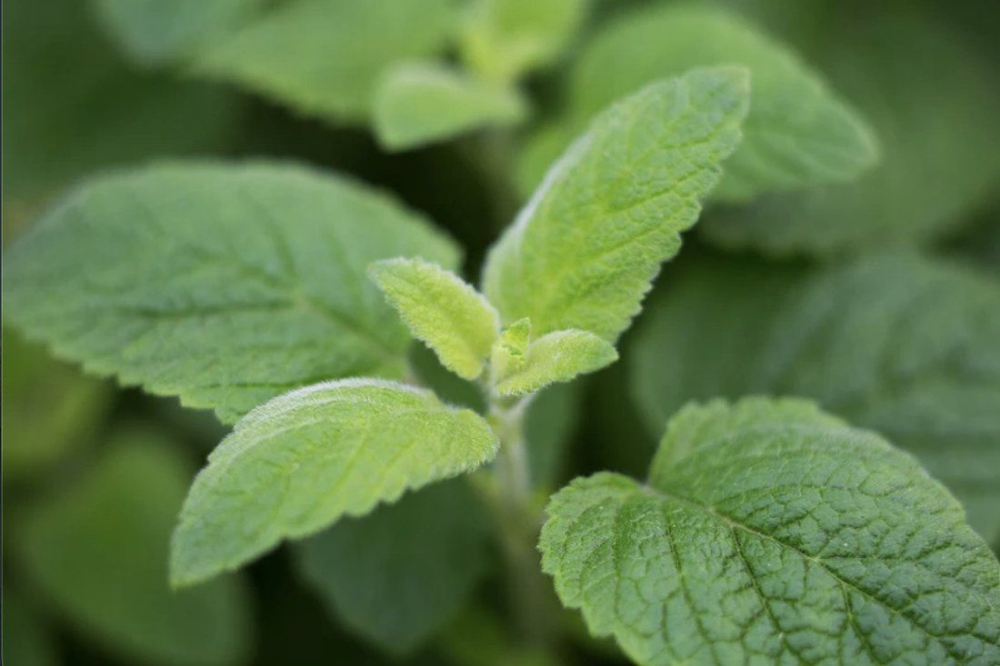

YSC · desde 1966

Mentol NaturalMenta Arvensis
A YSC, empresa do grupo, é a única produtora brasileira de mentol natural — um ingrediente de elevada pureza, origem rastreável e qualidade consistente, reconhecido pelas propriedades refrescantes, analgésicas e antissépticas.
Apresentações disponíveis
Mentol Cristalizado Natural
Mentol Natural em Pó
Óleo Tri-retificado
Óleo Desmentolado
Óleo Bruto
Óleo de Menta Piperita
Óleo de Spearmint
Aplicações
- Ativos refrescantes e analgésicos para OTC, higiene oral e dermocosmética
- Base industrial para extração de mentol e formulações farmacêuticas/cosméticas
- Perfumaria funcional e blends aromáticos